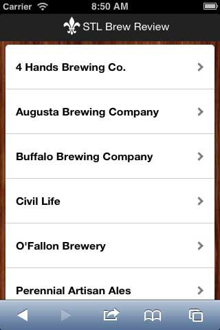
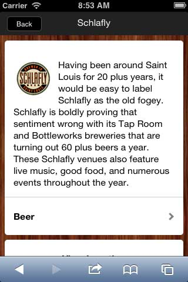
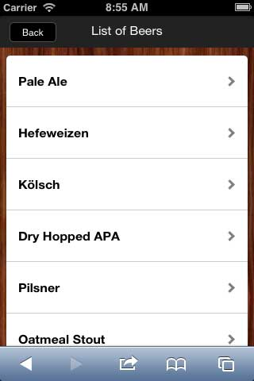
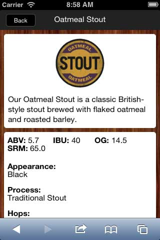
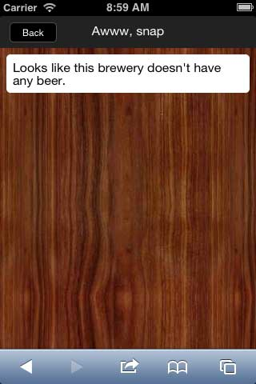

This is project is my first venture into mobile development utilizing the PhoneGap/Cordova framework. Currently, it is still in development.
The inner workings of this app are pretty straight forward. When first loaded, the app makes an XMLHttpRequest to stlbrewreview.com/breweries.json. The app then parses the JSON string for the details of each brewery, assigning each as an object in an array. This array is then passed them to a mustache template which is rendered for each entity in the array.
When a user selects a brewery, the app retrieves the brewery's id from the item's data attribute, queries the array for the associated object, and passes the retrieved data to another mustache template.
The details screen for each brewery is pretty straight forward; mostly a number of links that the user can use to find more information about the brewery. However, an important feature to note is the "Beer" link.
When the beer link is clicked, the "short_name" attribute of the brewery's object is passed to function that generates a URL. This URL is then utilized to make a second XMLHttpRequest that retrieves and parses a JSON file that contains all the details of each beer. If it exists, this data is then sent to yet another mustache template that generates a list of beers for that brewery.
If this data does not exist -- which is possible since the site that this app pulls from has not been fully populated -- another (very basic) mustache template is render; one that merely alerts the user that this brewery does not have any beers listed.
